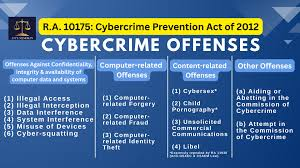

While cyber crime affects individuals deeply, its impact on organizations such as businesses, schools, hospitals, and government agencies can be just as serious. Organizations often store large amounts of sensitive data, making them attractive targets for criminals who want money or information. A single successful cyber attack can bring an entire organization to a stop, causing financial losses, exposing customer data, and damaging the trust that took years to build. Understanding how cyber crime affects organizations helps explain why investing in cybersecurity is not just a technical issue, but a critical responsibility for everyone in the organization.
Massive Financial Damage
The financial cost of a cyber attack on an organization can be very large. Direct losses include stolen funds, ransom payments to get encrypted data back, and the cost of fixing damaged systems. Indirect costs can be even higher. These include lost business during downtime, the expense of hiring cybersecurity experts to investigate the breach, and possible legal fees. For small and medium-sized businesses, a major cyber attack can be enough to force them to permanently close. Large companies are not safe either. Big retail chains and banks have lost hundreds of millions of dollars due to data breaches and cyber attacks. In the Philippines, small businesses that operate online have increasingly become targets, often because they do not have the resources to invest in strong security. The financial impact of cyber crime on organizations also affects employees, customers, and the broader economy.
Data Breaches and Exposed Sensitive Information
One of the most serious consequences of a cyber attack on an organization is a data breach, which is when unauthorized people gain access to sensitive information stored in the organization's systems. This can include customer names, addresses, financial details, health records, and confidential business information. Once stolen, this data can be sold on secret online markets, used to commit identity theft, or used for further attacks. The exposure of customer data is not just damaging to the people affected. It also creates serious legal and financial problems for the organization responsible for protecting that data. In countries with data protection laws, organizations can face heavy fines for failing to prevent breaches. Schools and universities are also frequent targets because they store personal information about thousands of students and staff, yet often have weaker security systems than large corporations.
Reputation Damage and Loss of Trust
Trust is one of the most valuable things any organization has, and a cyber attack can destroy it very quickly. When customers learn that their personal information has been exposed because of a company's security failure, many will lose confidence in that organization and take their business elsewhere. A high-profile data breach can generate negative news coverage that lasts for months or years, leaving a lasting mark on the organization's public image. Rebuilding trust after a cyber attack requires a lot of investment in both technical improvements and public communication efforts, and there is no guarantee that affected customers will return. For government agencies, a cyber attack can damage the public's confidence in the institution's ability to protect citizens' information. The reputational effects of cyber crime show why cybersecurity is not just a technical issue, but a matter of public trust and responsibility.
Disruption to Daily Operations
Cyber attacks can completely stop an organization's operations, with potentially life-threatening results in certain sectors. Ransomware attacks on hospitals, for example, have forced medical staff to use paper-based processes, slowing down critical patient care. Government agencies that have been hacked may be unable to process applications, issue documents, or deliver important public services for days or even weeks. For businesses that rely on e-commerce or digital systems, even a few hours of downtime can mean big revenue losses and frustrated customers. The disruption also affects employees, who may not be able to do their jobs, leading to lost productivity and workplace stress. Supply chains can also be disrupted when one organization in a network is attacked, creating a chain reaction that impacts multiple businesses and their customers.

Legal and Regulatory Consequences
Organizations that fail to properly protect their systems and data can face serious legal consequences after a cyber attack. In the Philippines, the Data Privacy Act of 2012 requires organizations to put in place reasonable security measures to protect personal data, and violations can result in significant fines and even imprisonment for responsible officers. Internationally, regulations like the General Data Protection Regulation (GDPR) in Europe impose strict penalties on organizations that fail to protect the personal data of European citizens. Beyond government penalties, organizations may also face lawsuits from customers, employees, or business partners whose data or operations were affected by a breach. The legal fallout from a cyber attack can drag on for years and use up a lot of resources. These legal and financial risks make it clear that investing in cybersecurity is a legal obligation for organizations that handle sensitive information.
Conclusion
The effects of cyber crime on organizations are wide-ranging and very serious, affecting finances, data security, reputation, daily operations, and legal standing all at the same time. No organization, regardless of its size or type, is completely safe from cyber threats. The most effective defense is a proactive approach that combines strong technical security with regular staff training, clear response plans, and a culture of cybersecurity awareness. For businesses in the Philippines, following the Data Privacy Act and staying updated on cyber threats is an essential part of running a responsible organization. When organizations take cybersecurity seriously, they protect not just themselves, but also the customers, employees, and communities that depend on them. In the digital age, cybersecurity is not optional. It is a fundamental responsibility.